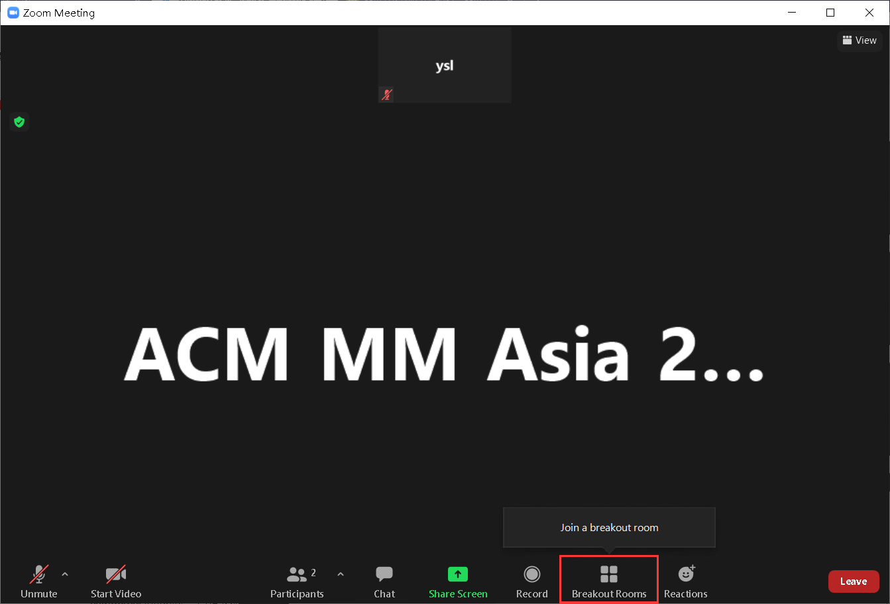
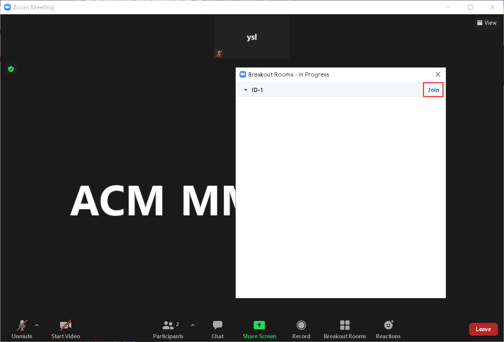
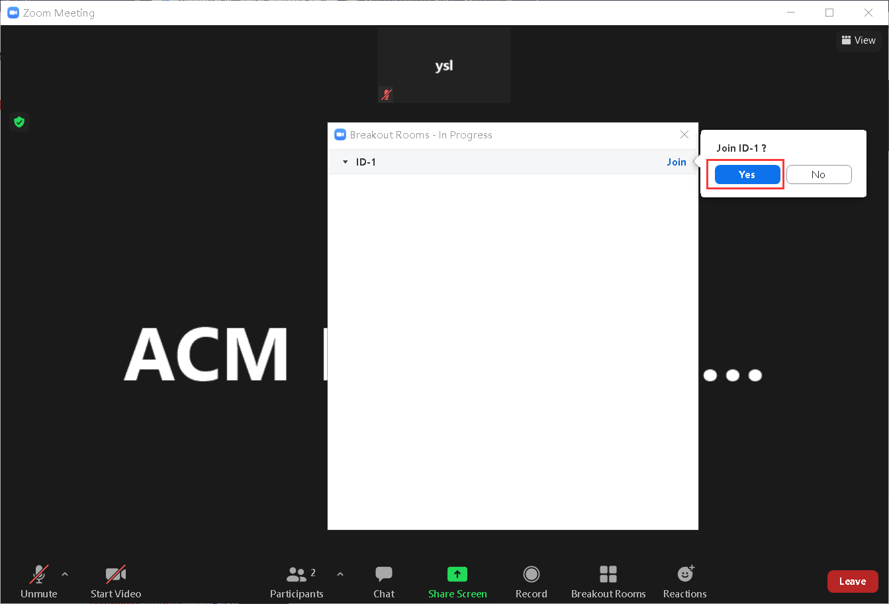
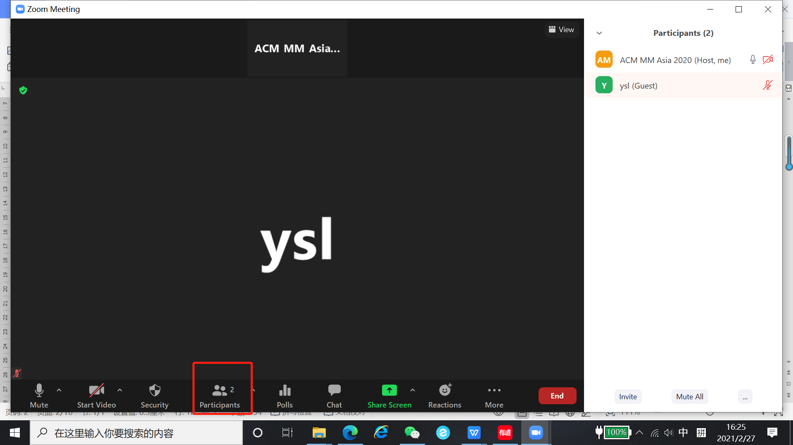
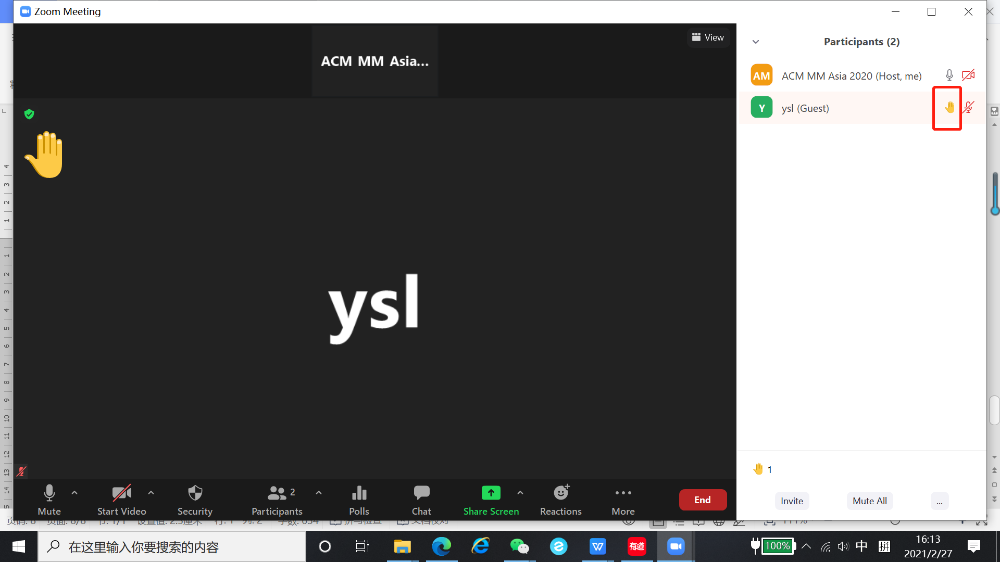
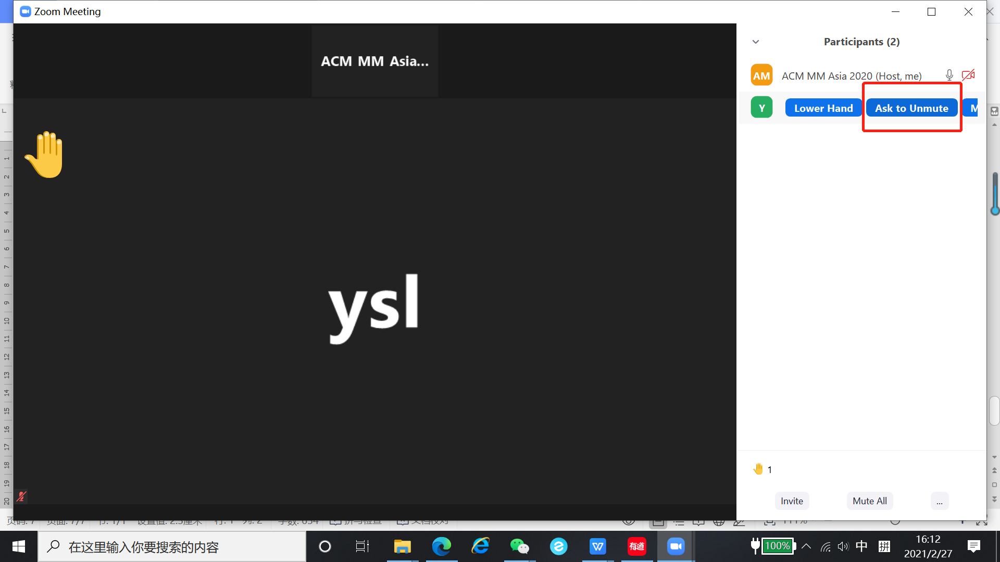
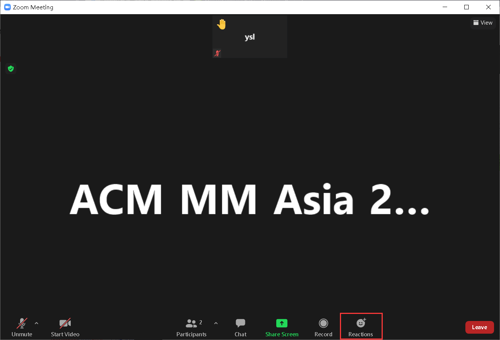
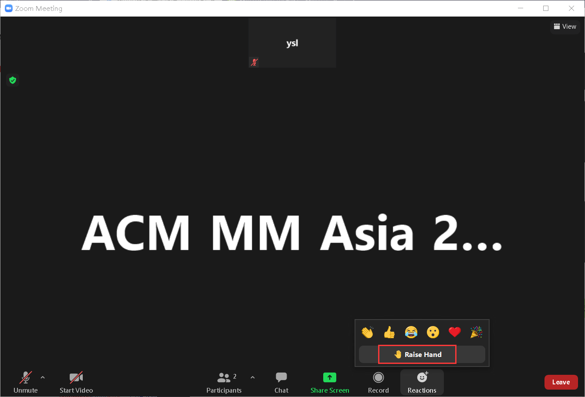

Zoom Info for Q&A Sessions
Dear ACM Multimedia Asia 2020 attendees,
We will use the meeting function powered by Zoom for Q&A sessions at ACM MM Asia 2020. The virtual conference will start in less than one week (from Mar. 7 to Mar. 9). Here we'd like to inform you of the conference Zoom Meetings info for the Q&A sessions. Each paper will be scheduled by an original and a mirrored Q&A session (instead of best paper session and tutorial sessions). Excepted for the tutorial session, we will divide the other sessions into smaller virtual rooms. The virtual room is named with the paper ID. For the presenter, you should join in the virtual room named with your paper ID. For the audience, you can join in the room that you personally would like to attend. The Zoom Meetings info are listed as follows,
Conference link:
https://zoom.com.cn/j/63805368954?pwd=Szlvc3ArN0oyY21yM2xicHN2azkvUT09
Conference ID: 638 0536 8954
Conference Password: mmasia2020
For better effects, please see below the references for you to use the zoom system. (Person of Contact: Jin Lu, lu.jin@njust.edu.cn)
Preparation
1. A fair and stable network for live broadcast
2. Use a PC (the system supports windows and macOS) for live broadcast
3. Have your microphone and camera ready
4. Download the live conference software Zoom conference client (
https://zoom.us/download)
5.
(Highly recommended) Test the equipment and network with a volunteer before the conference
How to use Zoom for Q&A sessions
For the presenter:
1. Enter the designated Zoom room 15 minutes in advance.
2. You will join the meeting room as an attendee. Please indicate your name, the title and ID of your paper via “Chat”. The volunteer will make you as a co-host of the meeting room. Join in the virtual room named with your paper ID.
First, you should click the “Breakout Rooms” button.

Then you can see the detailed information about the Breakout Rooms. Choose the room that corresponding to your paper ID. For example, the room “ID-1” corresponding to the paper ID
1. Click the “Join” button.

After that, click “Yes” button, then you will join in the room “ID-1” successfully.

3. Get familiar with related operations (turn on and off the audio and video).
4. Get ready for the Q&A session; Share your screen for slide show.
5. For the Q&A session, there are two options:
a) You can check and read the questions via “Chat”;
b) You can allow an attendee who has “raised a hand” and allow him or her to talk to you.
You can find the attendee who has “raised a hand” by clicking the “Participant” button:

If an attendee has raised a hand, you can see a yellow hand in the list of attendees:

Then you can allow him or her to ask a question via audio by hovering your mouse on the attendee and clicking the “Ask to Unmute” button:

6. When the Q&A session ends, turn off the microphone, camera, and screen sharing.
For the audience:
1. Enter the designated Zoom room.
2. You will join the meeting room as an attendee. Join the virtual room that you personally would like to attend.
First, you should click the “Breakout Rooms” button.
Then you can see the detailed information about the Breakout Rooms. Choose the room that corresponds to your paper ID. For example, the room “ID-1” corresponding to the paper ID.
1. Click the “Join” button.
After that, click the “Yes” button, then you will join in the room “ID-1” successfully.
3. Get familiar with related operations (turn on and off the audio and video).
4. For the Q&A sessions, there are two options to communicate with the authors:
c) You can type the questions via “Chat”;
d) You can allow an attendee who has “raised a hand” and allow him or her to talk to the presenter. You can ask to talk with the author by “raised a hand” action.
You can send a “raised a hand” request by clicking the “Reactions” button:

After you click the “Raise Hand” button, the author will receive the request:

Then the author allows you to ask a question via audio.
5. When the Q&A session ends, turn off the microphone, camera, and leave the virtual room.
Please read this carefully and participate in your session on time.
We are looking forward to meeting you online in ACM Multimedia Asia 2020.